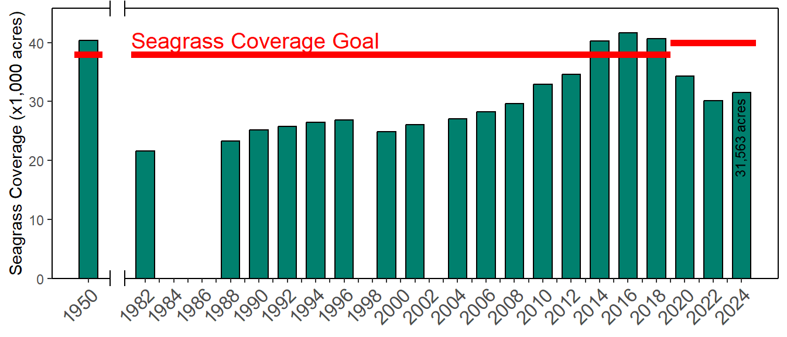

WQ-1
Implement the nutrient management strategy for Tampa Bay
OBJECTIVES:
Continue to implement the nutrient management strategy for Tampa Bay to maintain water quality necessary to support seagrass at or above target levels. Document trends in water quality and track nutrient reduction and prevention actions within the watershed. Develop and implement nutrient criteria recommendations and management strategies for the bay’s tidal streams.
STATUS:
Ongoing. The Tampa Bay Estuary Program (TBEP) continues to maintain the Nitrogen Reduction Action Plan Database and prepare Reasonable Assurance documentation for water quality requirements. TBEP further supported: 1) establishment of estimates for atmospheric deposition to Tampa Bay watershed sub basins and waters, 2) establishment of estimates of nitrogen loading from residential fertilizer and irrigation and corresponding nutrient load reductions associated with fertilizer restrictions and 3) development of numeric nutrient criteria recommendations for Tampa Bay.
BACKGROUND:
Controlling nitrogen input into the bay as a means to regain vital seagrass beds has been one of TBEP’s most prominent initiatives. Seagrasses were selected as a metric by which efforts to improve the bay are measured because of their overall importance as a bay habitat and nursery, and because they are an important barometer of water quality.

In 1995, TBEP adopted a goal of restoring seagrass to 1950 levels after decades of decline (Robison et al. 2020). Reaching this goal required collaboration from local governments, industries, and citizens to reduce nutrients throughout the watershed. The nationally recognized Tampa Bay Nitrogen Management Consortium (TBNMC) — an alliance of more than 45 local governments, regulatory agencies and key industries bordering the bay — played a leading role in reducing nitrogen loadings in the bay. TBNMC members developed voluntary water quality and nutrient loading targets to support TBEP’s seagrass recovery goals.
Robison, D., T. Ries, J. Saarinen, D. Tomasko, and and C. Sciarrino. 2020. “Tampa Bay Estuary Program: 2020 Habitat Master Plan Update.” 07-20. St. Petersburg, Florida: Tampa Bay Estuary Program. https://drive.google.com/file/d/1Hp0l_qtbxp1JxKJoGatdyuANSzQrpL0I/view?usp=drivesdk.
Between 1992 and 2021, this partnership implemented 496 nitrogen load reduction projects through a combined $836 million investment that precluded 950.3 tons/year of nitrogen (TN) from entering Tampa Bay. Baywide nutrient loads declined and water clarity improved to the equivalent of the 1950s period and seagrass coverage reached a peak of 41,655 acres in 2016, surpassing the revised restoration goal of 40,000 acres. By 2022, the bay had only 30,137 acres of seagrasses, a significant decrease of 11,518 acres even though water quality standards were met in all bay segments except Old Tampa Bay. TBEP and partners will reassess the assimilative capacity for nitrogen, beginning with the Old Tampa Bay segment, continue to investigate major drivers causing this loss (see WQ-3), and continue to make significant investments towards implementing projects.
In 1998, the U.S. Environmental Protection Agency (EPA) approved a regulatory Total Maximum Daily Load (TMDL) for Tampa Bay; in 2007, EPA required all permitted nutrient sources within the Tampa Bay watershed to adhere to annual numeric loading limits, or allocations, for their nitrogen discharge to Tampa Bay. The TBNMC proactively developed voluntary nitrogen loading limits for themselves and submitted those limits as recommended allocations to EPA and the Florida Department of Environmental Protection (FDEP), rather than relying on the regulatory agencies to develop the limits for them. Both EPA and FDEP encouraged and participated in this effort, which was led by TBEP.

As outlined in the 2009 and 2012 Tampa Bay Reasonable Assurance documents, TBNMC members developed fair and equitable allocations for all 189 permitted sources within the watershed that total the federally-recognized TMDL for Tampa Bay. Consequently, both FDEP and EPA accepted the recommended allocations as meeting water quality requirements for Tampa Bay. In 2011, the TBNMC further developed recommended numeric nutrient criteria consistent with the bay’s nutrient loading targets, which were subsequently adopted by the State in 2012.

The Tampa Bay nutrient management strategy has become a national and international model for successful watershed management collaborations. TBNMC success has utilized a multifaceted approach to reduce nutrient impacts to the bay, including stormwater treatment (see Action SW-10), wastewater reuse and aquifer recharge (see Action WW-1), septic conversions and reduction in sewer overflows (see Actions WW-2, WW-3 and WW-5), reduction in fertilizer use (see Action SW-8), process improvements for industrial manufacturing and power plants (see Action AD-1), habitat rehabilitation and restoration (see Action BH-1) and homeowner education (see Action SW-1).
Examples (with corresponding reduction in Total Nitrogen, TN, where available) include:
- Stormwater treatment projects such as the City of Clearwater’s Cliff Stephens Park Stormwater Retrofit Project (5.8 tons/yr TN reduction)
- Atmospheric deposition reduction projects such as Tampa Electric Company’s repowering of Gannon Power Plant Bayside (1.9 tons/yr TN reduction)
- Industrial manufacturing process upgrades such as those at CF Industries (now Mosaic) Bartow Phosphate Complex (18 tons/yr TN reduction)
- Agricultural water and fertilizer reductions such as citrus and row crop conversion to micro-irrigation in Hillsborough County (2 tons/yr TN reduction)
- Wastewater discharge to reuse such as Hillsborough County’s South County Reuse System (17.7 tons/yr TN reduction)
- Regional restoration and stormwater treatment creation such as Southwest Florida Water Management District’s Cockroach Bay Restoration Project (0.7 tons/yr TN reduction)
- Overlay districts requiring additional stormwater treatment such as Manatee County’s Development and Agricultural Overlay District in the Lake Manatee watershed (9.6 tons/yr TN reduction)
- Residential fertilizer ordinances restricting the use of nitrogen fertilizer during the rainy season adopted by Pinellas County, Manatee County, and cities of St. Petersburg, Clearwater and Tampa (an estimated 6% reduction in TN stormwater runoff)
- Stream and creek rehabilitation such as Pinellas County’s Allen’s Creek Rehabilitation Project (0.7 tons/yr TN reduction)
- Lake sediment rehabilitation such as the City of St. Petersburg’s Lake Maggiore Dredging Project (1.7 tons/yr TN reduction)
- Point discharge to deep well injection such as Tropicana’s Deep Well Injection Project (11 tons/yr TN reduction)
- Education campaigns addressing homeowner actions to reduce stormwater runoff such as UF/IFAS Extension’s Florida Friendly Landscaping™ and TBEP’s Be Floridian campaign.

Periodic assessments of the bay’s condition using nutrient-related metrics are now required by FDEP for TBEP partners and the TBNMC. These reporting requirements include annual water quality reports and 5-year Reasonable Assurance (RA) demonstrations that assure that the Tampa Bay Nutrient Management Strategy continues to meet state and federal water quality requirements. Reporting elements in the RA document include 5-year nitrogen loadings from all sources, compliance assessments with approved allocations, water quality trends in each bay segment, and identification of current and future actions to reduce nutrient loadings to Tampa Bay.
Water quality and seagrass conditions in Old Tampa Bay fell below goals during the 2017-2021 RA period. Since hydrologically normalized TN loads are being met, but chl-a exceedances and seagrass losses are still occurring, the TBNMC will reassess the assimilative capacity of Old Tampa Bay. Furthermore, TBEP and Consortium partners continue to implement habitat restoration, stormwater infrastructure, and point source improvement projects focused in Old Tampa Bay and throughout the Tampa Bay watershed that cumulatively contribute to the bay’s overall ecological improvement. The next Tampa Bay RA report, which covers the 2022-2026 period, is due to FDEP by December 2027. Additional planned and budgeted projects are expected to reduce TN loading by 70.5 tons per year.
Efforts to implement a similar nutrient management strategy in Tampa Bay tidal streams are underway (see Action BH-9). Ongoing research includes development of environmental indicators and thresholds of tidal stream health and nursery function to protect wetland systems against nutrient impairment and a management framework for their restoration (Wessel et al. 2021). This framework establishes proactive metrics that can be utilized by partners to implement watershed restoration actions that can reduce nutrient inputs to tidal streams. An open science tidal tributaries dashboard shows a screening-level evaluation of water quality for 225 creeks. Research explores the relationship between nutrient dynamics and tidal stream condition, advancing regional knowledge of these important low-salinity habitats, as well as informing and prioritizing management actions that may be needed to protect or enhance the ecology of these systems.
Wessel, M. R., J. R. Leverone, M. W. Beck, E. T. Sherwood, J. Hecker, S. West, and A. Janicki. 2021. “Developing a Water Quality Assessment Framework for Southwest Florida Tidal Creeks.” Estuaries & Coasts 45: 17–37. https://doi.org/10.1007/s12237-021-00974-7.